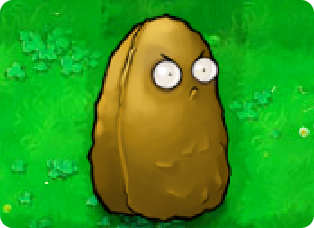

Back to Plants

Tall-nut
 125
125
 Slow
Slow
 Very High
Very High
Level Acquired:
Level 3-8
People wonder if there's a rivalry between Wall-nut and Tall-nut. Tall-nut laughs a rich baritone laugh. "How could there be anything between us? We are brothers. If you knew what Wall-nut has done for me..." Tall-nut's voice trails off and he smiles knowingly.
Plant Description
- Tall-nut is unlocked after beating Level 3-8, being the last Pool plant to be unlocked. He costs 125 sun and can serve as a sort of upgrade to Wall-nut, costing 75 more sun but having twice the health and is unable to be bounced over by leaping zombies. Tall-nuts can withstand 8000 damage per shot, and his appearance changes at 2667 damage and 5334 damage, before finally being eaten at 8000 damage.
Strategies
- Tall-nut shares the role with Wall-nut as a buffer layer between other offensive plants and the incoming horde. Compared to Wall-nut, Tall-nut will have more trouble getting deployed in the early game due to increased cost but makes up for it with superior performance in the following level thanks to the significantly increased durability. Tall-nut's usefulness is also due to the plant's unique ability to block zombies from jumping over him, preventing them from creating chaos in the player's defense line. Tall-nut can significantly boost the effectiveness of plants with limited attack range such as Spikeweed by holding the zombies in place for them to attack. Being a defensive plant, Tall-nut can also be instantly replaced with Wall-nut First Aid as long as there is visual degradation.